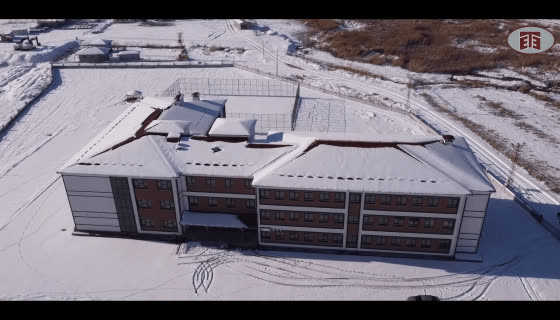

%68Üretim tamamlandı
12 / 30Tır sevk edildi
2 / 4Kat monte edildi
18 KasPlanlanan montaj bitişi
Proje aşamaları
✓ Sözleşme2 Eylül
✓ Statik proje16 Eylül · onaylandı
● Üretim%68 · sürüyor
● Sevkiyat12/30 tır
● Montaj2. kat tamam
○ TeslimAralık (plan)
Eleman üretim durumu
| Eleman | Adet | Üretilen | Durum |
|---|---|---|---|
| Çift duvar · zemin kat | 64 | 64 | Monte edildi |
| Çift duvar · 1. kat | 62 | 62 | Monte edildi |
| Çift duvar · 2. kat | 62 | 62 | Sevkiyatta |
| Çift duvar · 3. kat | 60 | 21 | Üretimde |
| Filigran döşeme | 168 | 118 | Üretimde |
| Merdiven / sahanlık | 8 | 0 | Planlandı |
Sevkiyat takvimi
Bugün2 tır · 2. kat çift duvar (P2-31…P2-48) · sabah 07:30 çıkış
Yarın3 tır · 2. kat filigran döşeme
Perşembe2 tır · 3. kat çift duvar (ilk parti)
CumartesiSevkiyat yok · montaj ekibi 2. kat döşeme betonu
Şantiye günlüğü



Belgeler
Proje ekibine sorun
WhatsApp'tan gönder
Her yeni sevkiyat ve montaj adımında size otomatik WhatsApp bildirimi gider.